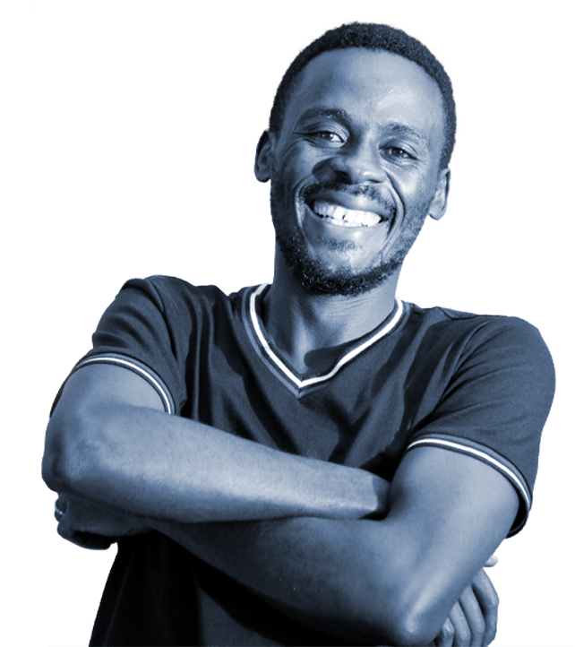

Hello I'm
Masambu
A UI/UX Designer | Graphics Designer | FrontEnd Developer
from Uganda
My experience spans from Graphics Design to Web Development.
I develop responsive mobile-first sites with my knowledge on
various web technologies and I'm very passionate and dedicated to
my work.